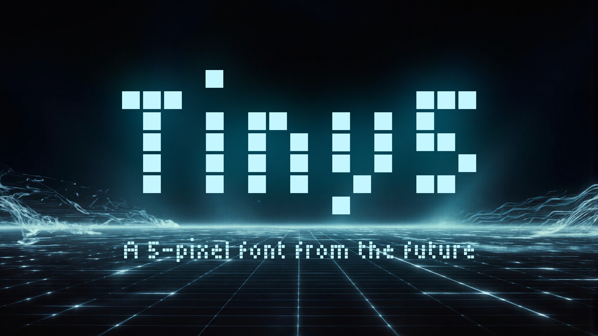
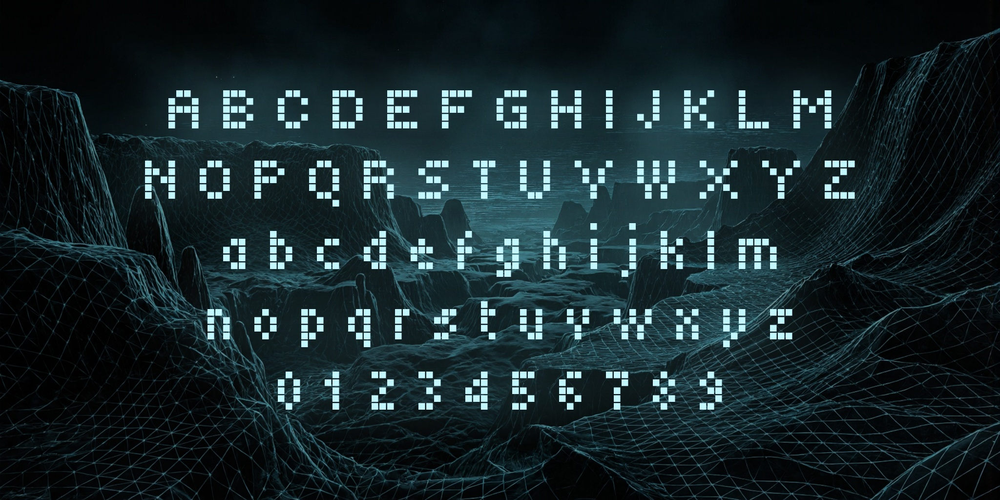
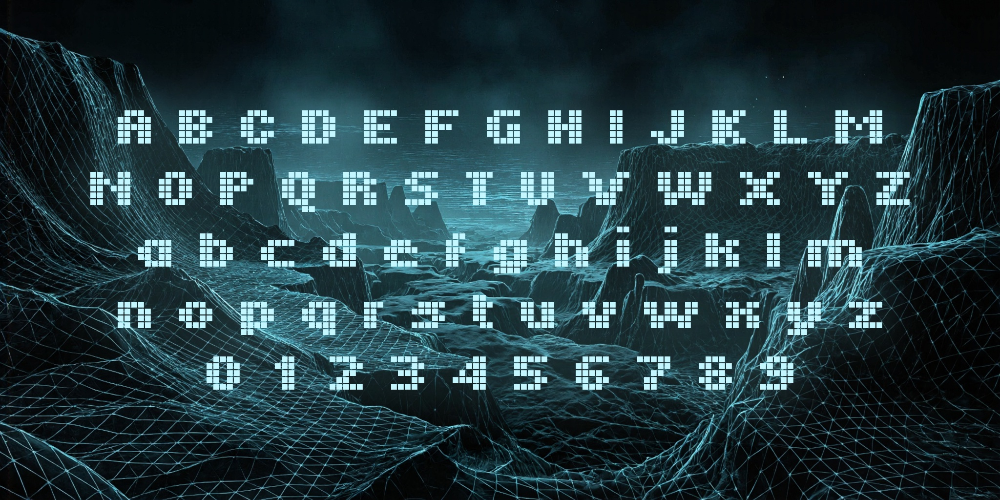
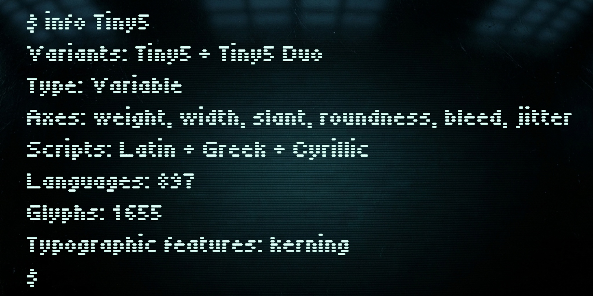
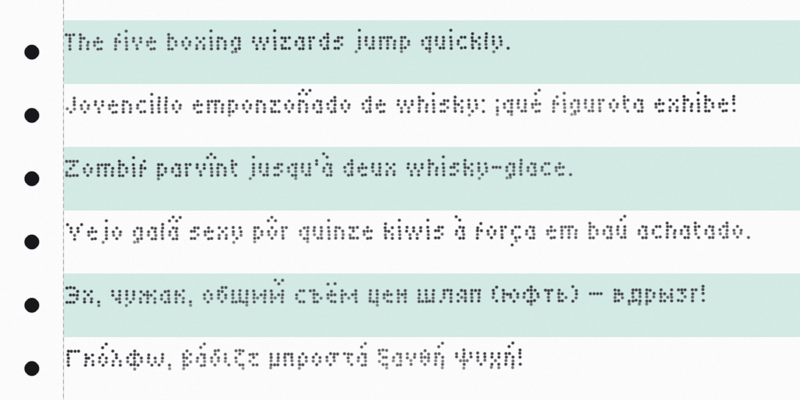

Tiny5 is a compact 5-pixel variable font that captures the essence of 1980s–90s digital minimalism. Inspired by the graphing calculators and digital gadgets of the era, it distills letterforms to their absolute essentials—proving that even with just five pixels of height, clarity, charm, and character can coexist.
It features three variable axes—weight, roundness, and bleed—that let you fine-tune the appearance: from crisp geometric forms and clean LCD edges to the warm glow of CRT monitors and the slight ink spread of dot-matrix printouts. A Tiny5 Duo variant has also been added for stronger emphasis while preserving the pixel-perfect aesthetic.
Tiny5 excels at evoking retro-futurism, minimalism, and constrained-tech nostalgia. It’s especially effective for:
Tiny5 provides broad language support including:
For pixel-perfect results, use font sizes that are multiples of 6 points.
To contribute to the project, visit github.com/Gissio/font_Tiny5.



